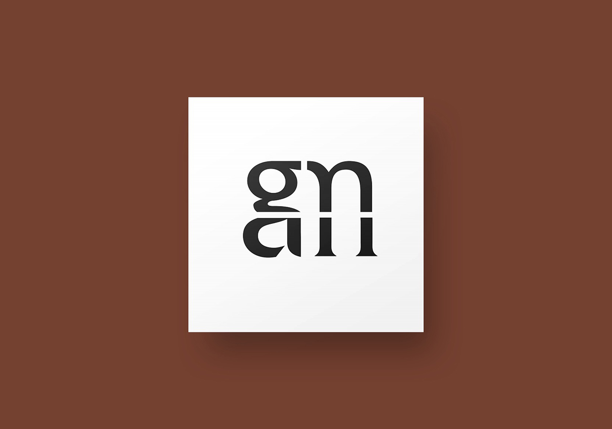

minimal letterforms
minimal letterforms study
For this piece, I began by studying a certain typeface through multiple thumbnail sketches of its unique qualities. Some of those sketches eventually were used to create 3 different compositions showcasing minimalistic views of certain letterforms.